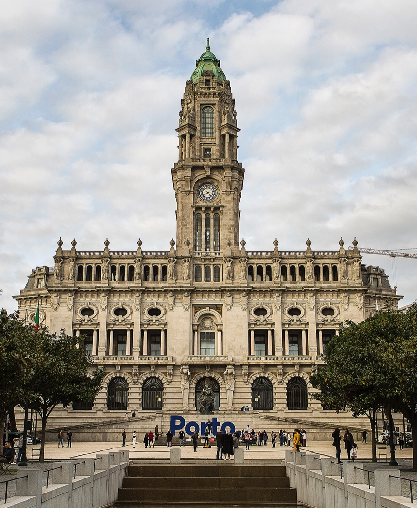
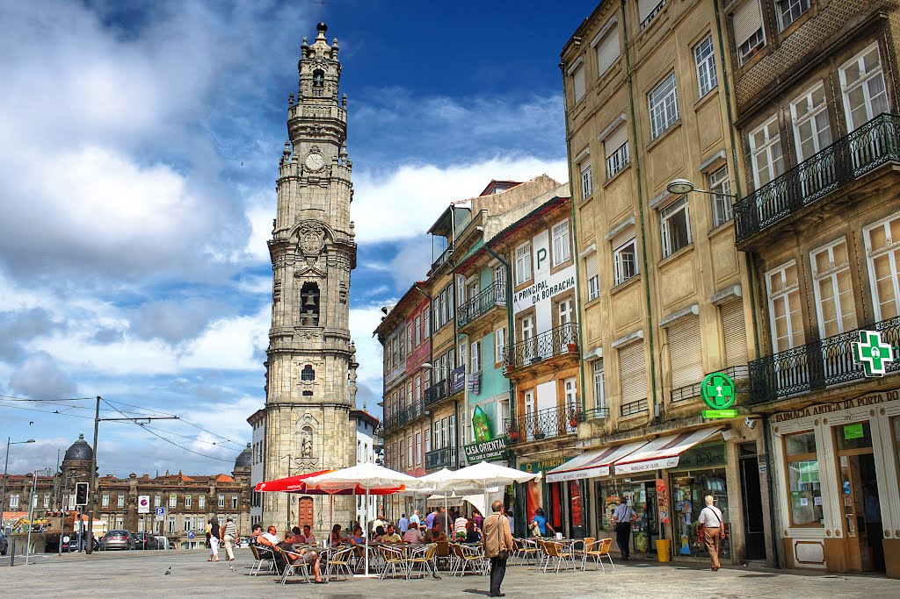
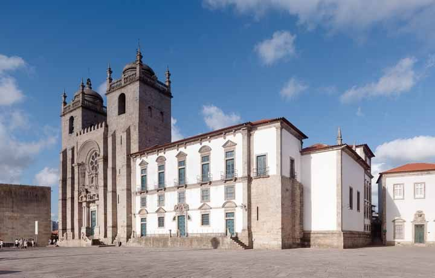
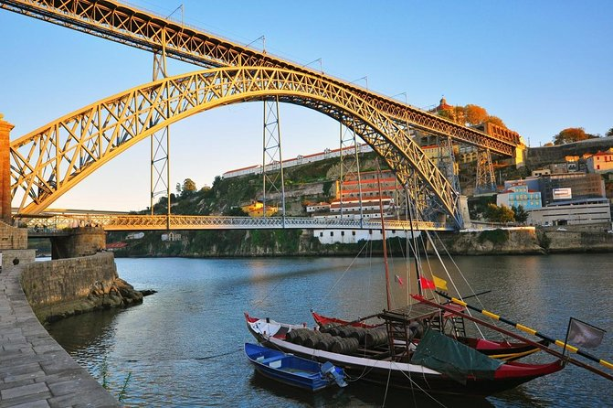
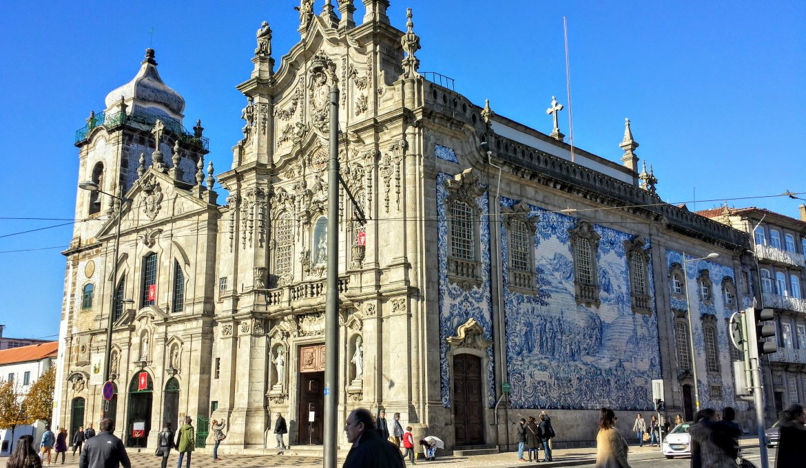
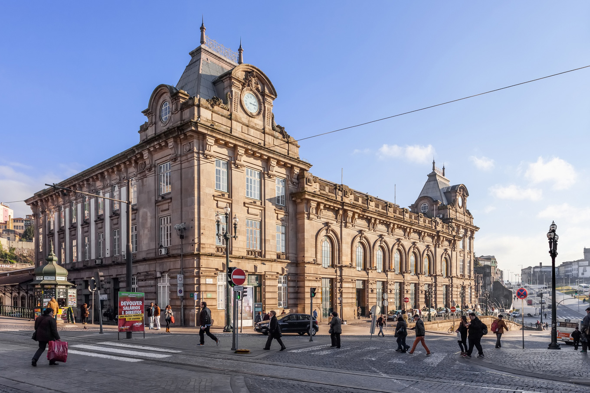

CAMINHOS DE SANTIAGO
CAMINHO PORTUGUÊS DA COSTA
CAMINHO PORTUGUÊS CENTRAL
CAMINHO DA ORLA ATLÂNTICA
CAMINHO DA ORLA ATLÂNTICA
PORTO
Caminho completo
Porto
Matosinhos
Vila do Conde
Póvoa de Varzim
Esposende
Viana do Castelo
Caminha
i
PATRIMÓNIO
01 / 05

Câmara Municipal do Porto
02 / 05

Torre dos Clérigos
03 / 05

Sé Catedral do Porto
04 / 05

Ponte de D.Luís
05 / 05

Igreja do Carmo
06 / 06

Estação de São Bento
❮
❯